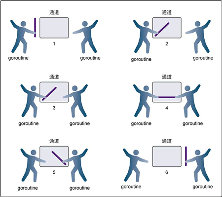

Go语言无缓冲的通道
Go语言中无缓冲的通道（unbuffered channel）是指在接收前没有能力保存任何值的通道。这种类型的通道要求发送 goroutine 和接收 goroutine 同时准备好，才能完成发送和接收操作。
如果两个 goroutine 没有同时准备好，通道会导致先执行发送或接收操作的 goroutine 阻塞等待。这种对通道进行发送和接收的交互行为本身就是同步的。其中任意一个操作都无法离开另一个操作单独存在。
阻塞指的是由于某种原因数据没有到达，当前协程（线程）持续处于等待状态，直到条件满足才解除阻塞。
同步指的是在两个或多个协程（线程）之间，保持数据内容一致性的机制。
下图展示两个 goroutine 如何利用无缓冲的通道来共享一个值。
在第 1 步，两个 goroutine 都到达通道，但哪个都没有开始执行发送或者接收。在第 2 步，左侧的 goroutine 将它的手伸进了通道，这模拟了向通道发送数据的行为。这时，这个 goroutine 会在通道中被锁住，直到交换完成。
在第 3 步，右侧的 goroutine 将它的手放入通道，这模拟了从通道里接收数据。这个 goroutine 一样也会在通道中被锁住，直到交换完成。在第 4 步和第 5 步，进行交换，并最终在第 6 步，两个 goroutine 都将它们的手从通道里拿出来，这模拟了被锁住的 goroutine 得到释放。两个 goroutine 现在都可以去做别的事情了。
为了讲得更清楚，让我们来看两个完整的例子。这两个例子都会使用无缓冲的通道在两个 goroutine 之间同步交换数据。
【示例 1】在网球比赛中，两位选手会把球在两个人之间来回传递。选手总是处在以下两种状态之一，要么在等待接球，要么将球打向对方。可以使用两个 goroutine 来模拟网球比赛，并使用无缓冲的通道来模拟球的来回，代码如下所示。
【示例 2】用不同的模式，使用无缓冲的通道，在 goroutine 之间同步数据，来模拟接力比赛。在接力比赛里，4 个跑步者围绕赛道轮流跑。第二个、第三个和第四个跑步者要接到前一位跑步者的接力棒后才能起跑。比赛中最重要的部分是要传递接力棒，要求同步传递。在同步接力棒的时候，参与接力的两个跑步者必须在同一时刻准备好交接。代码如下所示。
在这两个例子里，我们使用无缓冲的通道同步 goroutine，模拟了网球和接力赛。代码的流程与这两个活动在真实世界中的流程完全一样，这样的代码很容易读懂。
现在知道了无缓冲的通道是如何工作的，下一节我们将为大家介绍带缓冲的通道。
如果两个 goroutine 没有同时准备好，通道会导致先执行发送或接收操作的 goroutine 阻塞等待。这种对通道进行发送和接收的交互行为本身就是同步的。其中任意一个操作都无法离开另一个操作单独存在。
阻塞指的是由于某种原因数据没有到达，当前协程（线程）持续处于等待状态，直到条件满足才解除阻塞。
同步指的是在两个或多个协程（线程）之间，保持数据内容一致性的机制。
下图展示两个 goroutine 如何利用无缓冲的通道来共享一个值。

图：使用无缓冲的通道在 goroutine 之间同步
图：使用无缓冲的通道在 goroutine 之间同步
在第 1 步，两个 goroutine 都到达通道，但哪个都没有开始执行发送或者接收。在第 2 步，左侧的 goroutine 将它的手伸进了通道，这模拟了向通道发送数据的行为。这时，这个 goroutine 会在通道中被锁住，直到交换完成。
在第 3 步，右侧的 goroutine 将它的手放入通道，这模拟了从通道里接收数据。这个 goroutine 一样也会在通道中被锁住，直到交换完成。在第 4 步和第 5 步，进行交换，并最终在第 6 步，两个 goroutine 都将它们的手从通道里拿出来，这模拟了被锁住的 goroutine 得到释放。两个 goroutine 现在都可以去做别的事情了。
为了讲得更清楚，让我们来看两个完整的例子。这两个例子都会使用无缓冲的通道在两个 goroutine 之间同步交换数据。
【示例 1】在网球比赛中，两位选手会把球在两个人之间来回传递。选手总是处在以下两种状态之一，要么在等待接球，要么将球打向对方。可以使用两个 goroutine 来模拟网球比赛，并使用无缓冲的通道来模拟球的来回，代码如下所示。
// 这个示例程序展示如何用无缓冲的通道来模拟
// 2 个goroutine 间的网球比赛
package main
import (
"fmt"
"math/rand"
"sync"
"time"
)
// wg 用来等待程序结束
var wg sync.WaitGroup
func init() {
rand.Seed(time.Now().UnixNano())
}
// main 是所有Go 程序的入口
func main() {
// 创建一个无缓冲的通道
court := make(chan int)
// 计数加 2，表示要等待两个goroutine
wg.Add(2)
// 启动两个选手
go player("Nadal", court)
go player("Djokovic", court)
// 发球
court <- 1
// 等待游戏结束
wg.Wait()
}
// player 模拟一个选手在打网球
func player(name string, court chan int) {
// 在函数退出时调用Done 来通知main 函数工作已经完成
defer wg.Done()
for {
// 等待球被击打过来
ball, ok := <-court
if !ok {
// 如果通道被关闭，我们就赢了
fmt.Printf("Player %s Won\n", name)
return
}
// 选随机数，然后用这个数来判断我们是否丢球
n := rand.Intn(100)
if n%13 == 0 {
fmt.Printf("Player %s Missed\n", name)
// 关闭通道，表示我们输了
close(court)
return
}
// 显示击球数，并将击球数加1
fmt.Printf("Player %s Hit %d\n", name, ball)
ball++
// 将球打向对手
court <- ball
}
}
运行这个程序，输出结果如下所示。
Player Nadal Hit 1
Player Djokovic Hit 2
Player Nadal Hit 3
Player Djokovic Missed
Player Nadal Won
- 第 22 行，创建了一个 int 类型的无缓冲的通道，让两个 goroutine 在击球时能够互相同步。
- 第 28 行和第 29 行，创建了参与比赛的两个 goroutine。在这个时候，两个 goroutine 都阻塞住等待击球。
- 第 32 行，将球发到通道里，程序开始执行这个比赛，直到某个 goroutine 输掉比赛。
- 第 43 行可以找到一个无限循环的 for 语句。在这个循环里，是玩游戏的过程。
- 第 45 行，goroutine 从通道接收数据，用来表示等待接球。这个接收动作会锁住 goroutine，直到有数据发送到通道里。通道的接收动作返回时。
- 第 46 行会检测 ok 标志是否为 false。如果这个值是 false，表示通道已经被关闭，游戏结束。
- 第 53 行到第 60 行，会产生一个随机数，用来决定 goroutine 是否击中了球。
- 第 58 行如果某个 goroutine 没有打中球，关闭通道。之后两个 goroutine 都会返回，通过 defer 声明的 Done 会被执行，程序终止。
- 第 64 行，如果击中了球 ball 的值会递增 1，并在第 67 行，将 ball 作为球重新放入通道，发送给另一位选手。在这个时刻，两个 goroutine 都会被锁住，直到交换完成。
【示例 2】用不同的模式，使用无缓冲的通道，在 goroutine 之间同步数据，来模拟接力比赛。在接力比赛里，4 个跑步者围绕赛道轮流跑。第二个、第三个和第四个跑步者要接到前一位跑步者的接力棒后才能起跑。比赛中最重要的部分是要传递接力棒，要求同步传递。在同步接力棒的时候，参与接力的两个跑步者必须在同一时刻准备好交接。代码如下所示。
// 这个示例程序展示如何用无缓冲的通道来模拟
// 4 个goroutine 间的接力比赛
package main
import (
"fmt"
"sync"
"time"
)
// wg 用来等待程序结束
var wg sync.WaitGroup
// main 是所有Go 程序的入口
func main() {
// 创建一个无缓冲的通道
baton := make(chan int)
// 为最后一位跑步者将计数加1
wg.Add(1)
// 第一位跑步者持有接力棒
go Runner(baton)
// 开始比赛
baton <- 1
// 等待比赛结束
wg.Wait()
}
// Runner 模拟接力比赛中的一位跑步者
func Runner(baton chan int) {
var newRunner int
// 等待接力棒
runner := <-baton
// 开始绕着跑道跑步
fmt.Printf("Runner %d Running With Baton\n", runner)
// 创建下一位跑步者
if runner != 4 {
newRunner = runner + 1
fmt.Printf("Runner %d To The Line\n", newRunner)
go Runner(baton)
}
// 围绕跑道跑
time.Sleep(100 * time.Millisecond)
// 比赛结束了吗？
if runner == 4 {
fmt.Printf("Runner %d Finished, Race Over\n", runner)
wg.Done()
return
}
// 将接力棒交给下一位跑步者
fmt.Printf("Runner %d Exchange With Runner %d\n",
runner,
newRunner)
baton <- newRunner
}
运行这个程序，输出结果如下所示。
Runner 1 Running With Baton
Runner 1 To The Line
Runner 1 Exchange With Runner 2
Runner 2 Running With Baton
Runner 2 To The Line
Runner 2 Exchange With Runner 3
Runner 3 Running With Baton
Runner 3 To The Line
Runner 3 Exchange With Runner 4
Runner 4 Running With Baton
Runner 4 Finished, Race Over
- 第 17 行，创建了一个无缓冲的 int 类型的通道 baton，用来同步传递接力棒。
- 第 20 行，我们给 WaitGroup 加 1，这样 main 函数就会等最后一位跑步者跑步结束。
- 第 23 行创建了一个 goroutine，用来表示第一位跑步者来到跑道。
- 第 26 行，将接力棒交给这个跑步者，比赛开始。
- 第 29 行，main 函数阻塞在 WaitGroup，等候最后一位跑步者完成比赛。
- 第 37 行，goroutine 对 baton 通道执行接收操作，表示等候接力棒。
- 第 46 行，一旦接力棒传了进来，就会创建一位新跑步者，准备接力下一棒，直到 goroutine 是第四个跑步者。
- 第 50 行，跑步者围绕跑道跑 100 ms。
- 第 55 行，如果第四个跑步者完成了比赛，就调用 Done，将 WaitGroup 减 1，之后 goroutine 返回。
- 第 64 行，如果这个 goroutine 不是第四个跑步者，接力棒会交到下一个已经在等待的跑步者手上。在这个时候，goroutine 会被锁住，直到交接完成。
在这两个例子里，我们使用无缓冲的通道同步 goroutine，模拟了网球和接力赛。代码的流程与这两个活动在真实世界中的流程完全一样，这样的代码很容易读懂。
现在知道了无缓冲的通道是如何工作的，下一节我们将为大家介绍带缓冲的通道。
关注公众号「站长严长生」，在手机上阅读所有教程，随时随地都能学习。内含一款搜索神器，免费下载全网书籍和视频。

微信扫码关注公众号